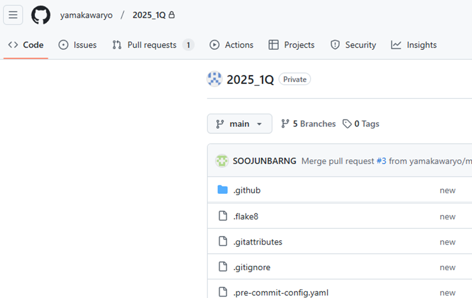
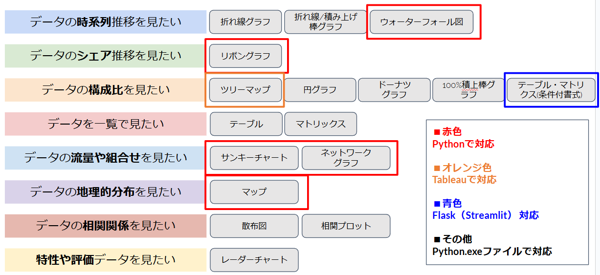

GIT repository基本
プロダクトやコード共有の基本テンプレートを作成した

PythonのVisualization作成テンプレート【可視化】

情報収集＆スクレイピング: Worked closely with [team or department] on [specific project].
- 過去３年の天気データ
- CK別所要データ
- 【進行中】衛星データ
- 【進行中】モバイル空間データ
勉強会・スキル補助資料作成:資料作成URL一覧
【対象外】LLMモデル導入:自動返信が可能な簡単なモジュールを作成した
【対象外】法人リスト作成:M&A提案基礎として日本４８０万社【廃業含む】のリストを作成した
【対象外】PDF自動エクセルか作成:無料ソフトでうまくエクセル化できない資料をエクセル化するモジュール作成
【対象外】ConvanoRPA作成:PVを自動で取るモジュールを作成した
反省点
私は以下のような課題があると強く考えます。
- 勤怠：月１以上遅刻、不安定なシフト、月１以上健康問題、喫煙による頻繁な席離れ
- 要件定義不足：CK関連プロジェクトで要件をフォーマットを強く言えなかった。また、システムでできる事、できないことを明確に伝えることができなかった。
- システム安定性不足：現状コーディングの修繕性が非常に落ちている問題がある。UTILSやクラス【オブジェクト含み】導入を行うべき
今後６か月計画
早く以下の課題を解決したいと考えます
- CKシフト自動化: 広告データをベースに日次・週次・月次CK配置・最適化プランを作成する
- インフラ基盤: AWSを中心としたインフラ作成
- 広告最適化: CKシフトと連動した広告最適状況作成
６か月～２年長期計画
会社の悩みとして、効率的な集客・超高単価客の海外流出・CK効率低下・IT＆AIツール不足だと仮定している
私は２年スパンで以下の課題に取り組みたいと考えます。
- CK関連マルチモーダル:カウンセリング内容・カウンセリング後表情・カウンセリング履歴など音声・テキスト・視覚情報を含めた単価アップを成し遂げるためのAIツールを開発・提案したい
- 広告ABテストツール開発:現状エクセル基盤のABテストを自動で集計するツールを提案したい
- 費用配賦テーブル作成:クリニック・スタッフ事の費用を集計できるテーブルの開発を進めたい
- コミュニティ開発:Googleに頼らず、消費者が情報を得られるコミュニティを構築運営したい
- 業務用LLM導入:
労務・勤怠・入退職・給与に関して自由に質問できる
簡単にいえば、社内ChatGPTを作りたい
例：私は残業規定対象者なのか？
- CK勉強会資料自動生成:自動動画生成
- 競合他社比較ツール導入:地域・人口＋人流を含めたPLOT図
- 海外事業:医者の無い医療コンサルティング会社を提案したい
業績評価レポート
期間：2025.02-2025.08